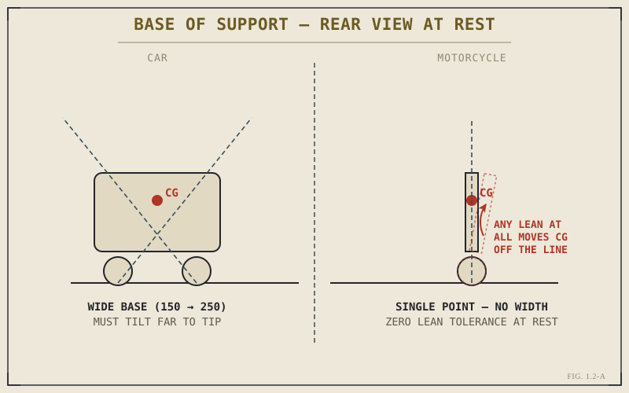

A car can lose grip at one wheel — hit a patch of oil, a wet drain cover, loose gravel under one corner — and very often stay completely controllable, because it still has three other contact points doing their job. Lose grip at either wheel on a motorcycle, even for a fraction of a second, and there is nothing else holding the machine up. Why does removing two wheels change so much more than the obvious arithmetic of "half the wheels"?
In Chapter 1.1 we established the single fact that makes a motorcycle a motorcycle: it cannot balance itself, so the rider becomes part of the control system. That fact has a mechanical cause, and it's worth taking apart properly before we go any further, because almost everything from the chassis geometry in Part IV through the physics in Part VIII eventually traces back to it. Removing two wheels from a vehicle doesn't just remove weight and cost. It removes an entire category of built-in safety margin, and it changes the basic geometry of how the vehicle relates to the ground beneath it.
From a Rectangle to a Line
Start with a plain idea from balance physics: an object stays upright on its own, with no active correction needed, as long as its centre of gravity stays somewhere above its base of support — the area enclosed by its contact points with the ground. A four-legged table has a base of support shaped like a rectangle. Push the table slightly, and as long as it doesn't tip far enough to move its centre of gravity outside that rectangle, it settles back down on its own. That's what "stable" actually means in mechanical terms.
A car's four tyres form exactly this kind of rectangle. It's a wide, generous base of support, and it's the entire reason a car just sits there at a stoplight without anyone holding it. You can lean on it, load it unevenly, park it on a gentle slope, and it doesn't care. Its centre of gravity has a lot of room to move before it ever approaches the edge of that rectangle.
A motorcycle's two tyres, arranged one directly in front of the other, don't form a rectangle at all. They form, for balance purposes, essentially a single line with no width to speak of. There is no side-to-side base of support. The instant a stationary motorcycle leans even slightly to one side, its centre of gravity moves outside that line, and nothing about the geometry resists it. It falls. Every time, without exception, unless something — a rider, a stand, a wall — actively holds it there.

Base of support comparison — the four-wheel rectangle a car balances within, versus the single line a stationary motorcycle has no width to lean against.
This is the mechanical root of the fact we opened Chapter 1.1 with. It isn't mysterious or specific to motorcycles as objects — it's true of anything balanced on a line rather than an area, from a bicycle to a broom standing on its bristles. What's worth flagging here, and holding onto until later, is that this same machine that can't stand still on its own becomes remarkably stable once it's rolling. The full mechanical explanation for why belongs to the steering geometry in Part IV and the physics of rotating wheels in Part VIII — for now, just notice how strange that trade is. A parked motorcycle has zero patience for being off balance. A moving one, done right, will hold a line practically by itself.
Turning Without Leaning Isn't Optional
The rectangle-versus-line difference doesn't only explain why one vehicle can stand still and the other can't. It also explains something riders are told constantly and rarely told why: that a motorcycle has to lean into a corner, and a car doesn't.
When a car goes around a corner, its tyres generate a sideways force that bends its path — this is the same cornering force every vehicle needs, and we'll define it properly in Part VIII. Gravity, meanwhile, is still pulling straight down on the car's mass. The car's wide rectangular base of support is generally wide enough to handle the combination of those two forces without the chassis needing to tilt to compensate — which is exactly why engineers spend real effort designing suspension to minimize body roll in a car, rather than encourage it. Leaning is the exception, not the plan.
A motorcycle doesn't have that option. With no lateral base of support to resist a sideways force, an upright motorcycle taking a corner at any real speed would simply be pushed off its thin line of contact and fall outward, away from the turn. The only way to keep the combined pull of gravity and cornering force lined up through that narrow contact patch is to tilt the whole machine — lean it — until the geometry balances again.
Leaning isn't a riding style, and it isn't optional flair. It's the mechanical answer to having no width to resist a turn any other way.
This is worth sitting with, because it reframes something a lot of new riders find counterintuitive or even frightening the first time they feel it: the bike leaning over in a corner isn't the machine losing composure. It's the machine doing exactly what it has to do, given that it only has a line of contact with the ground instead of a rectangle. The full vector-level explanation — how much lean a given speed and corner radius actually demands — is a Part VIII topic (8.3–8.4). What matters here is just seeing why the requirement exists at all.
One Wheel Doing Every Job
The rectangle also used to mean something else for the car: division of labour. A car's four separate contact patches share out the total demands placed on the vehicle. The front two tyres do most of the steering work and share braking duty with the rears. Weight is distributed across four points instead of two. And critically, if one tyre loses grip for a moment, the other three are still fully capable, which is a large part of why a four-wheeled vehicle sliding at one corner is often still a recoverable situation.
A motorcycle has no such division. Its front tyre, alone, is responsible for essentially all of the steering feel, the majority of the braking force, and a large share of the cornering grip. Its rear tyre, alone, is responsible for essentially all of the driving force that accelerates the bike, plus its own share of braking and cornering. Neither tyre has a partner on the same axle to lean on if it's asked for more than it can give.
This introduces an idea we'll come back to properly once we've covered tyres and grip in Part VI, and again in the physics of traction in Part VIII: at any given instant, a tyre only has a limited, finite amount of grip available, and that grip has to be divided between whatever it's currently being asked to do — cornering, braking, accelerating, or some blend of the three. Ask for more than the tyre has to give, in any combination, and it lets go. On a car, that's a problem shared across four contact patches. On a motorcycle, it's a problem each tyre faces entirely on its own.
Stability That Only Exists in Motion
Here's a consequence of all this that's easy to miss because it's so familiar to anyone who's ridden: a motorcycle's character changes dramatically with speed in a way a car's simply doesn't.
A parked car and a car cruising at highway speed feel, in terms of raw stability, like the same object. A motorcycle at walking pace — pulling out of a parking spot, crawling through a U-turn — feels top-heavy, requires constant small corrections, and rewards nothing but careful, deliberate balance. The same motorcycle at speed on an open road feels planted, wants to hold whatever line you've put it on, and shrugs off small bumps and disturbances that would have unsettled it at a crawl.
That shift isn't your imagination, and it isn't really about confidence, either — it's mechanical. Once a motorcycle is rolling, its geometry, its rotating wheels, and the way its front end is set up all begin contributing to keeping it balanced and tracking straight, in ways that simply don't exist while it's standing still. We're deliberately not unpacking the full mechanism here — that's the job of Part IV (steering geometry) and Part VIII (gyroscopic effects and rotational dynamics), and doing it justice needs the vocabulary those chapters build. For now, the useful takeaway is narrower: don't judge how a motorcycle will behave at speed by how it feels standing still, and don't judge how it feels standing still by how composed it becomes once it's moving. They are, mechanically, two different situations.
A Common Misconception, Cleared Up Early
It's tempting to hear all of this and conclude that a motorcycle simply has "half the traction" of a car, since it has half the tyres. That's not quite right, and the difference matters.
If it were purely a matter of scale — the same problem, just smaller — a two-wheeled vehicle arranged side by side, like a very narrow car, would behave like a miniature car: stable at rest, no leaning required, tyres sharing duties in roughly the same way. But that's not what a motorcycle is. Its wheels are arranged in a line, front to back, not side by side, which is a completely different geometric problem, not a scaled-down version of the same one. It's the difference between a table with four legs and a table with two legs positioned one behind the other: you haven't built a smaller table. You've built something that has to be actively balanced to stand at all, and that turns and stabilizes itself through mechanisms a four-legged table never needed in the first place.
So when you compare a motorcycle to a car, resist the shortcut of treating it as a lighter, narrower version of the same machine with fewer parts. It solves the problem of getting a person down the road in a structurally different way, and that difference — a line of contact instead of a rectangle — is the source of nearly everything that makes motorcycles behave, ride, and fail differently from cars.
Where This Leads
Every part of this book that follows Part I is, in some sense, a detailed answer to the question this chapter opened with: what does a machine have to do, mechanically, to make a single line of contact work at all? The chassis geometry in Part IV explains how the front end is designed to want to stay balanced once rolling. The suspension in Part V explains how each of those two lone contact points is kept pressed against the ground as the terrain changes beneath it. The tyres in Part VI explain exactly how much grip that single contact patch can actually produce, and how it changes with lean, load, and temperature. And the physics in Part VIII finally puts numbers to the lean angle, the load transfer, and the traction budget this chapter has only described in words.
Chapter 1.1 told you the rider is part of the answer to keeping a motorcycle upright. This chapter told you why the ground gives the machine no other choice.
Key Concepts to Remember
- A motorcycle's two in-line contact points form a line, not a rectangle, which is why it has no base of support to lean against while standing still.
- Leaning into a corner is a mechanical requirement, not a style choice — it's how the bike lines up cornering force and gravity through its narrow contact line.
- Each tyre handles steering, braking, and accelerating duties largely alone, with no sibling wheel on the same axle to share the load if grip runs out.
- Two wheels is not simply "half of four." It's a structurally different stability problem with no side-to-side redundancy.
- A motorcycle's stability changes character dramatically between standstill and speed, in a way a car's does not — the full mechanism is covered in Part IV and Part VIII.
Cross-References
| ← Ch. 1.1 | Established the core idea this chapter builds on: a motorcycle cannot balance itself, so the rider becomes part of the control system. |
| → Ch. 4.4 | Chassis — steering geometry, rake, trail, and why a rolling motorcycle stabilizes itself in ways a stationary one can't. |
| → Pt. VI | Tyres & Wheels — contact patch behaviour and the traction budget introduced here in plain terms. (Not yet published.) |
| → Pt. VIII | Motorcycle Physics — the full vector treatment of lean angle, cornering force, and load transfer only sketched qualitatively here. (Not yet published.) |